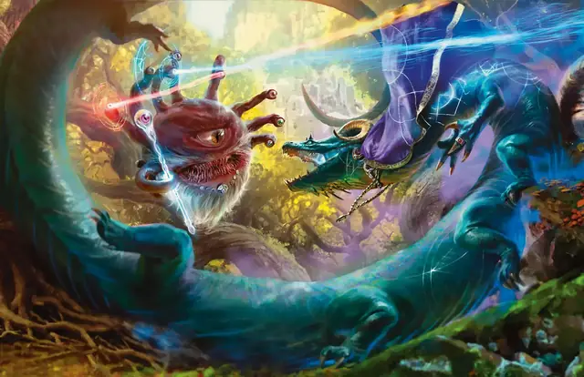

Преображение
Shapechange
9 уровень, Преобразование

Время сотворения Действие
Дистанция На себя
Компоненты В, С, М (нефритовый обруч стоимостью не менее 1 500 ЗМ)
Длительность Концентрация, вплоть до 1 часа
Вы перевоплощаетесь в другое существо на время действия заклинания или пока вы действием Магия не перевоплотитесь в другую удовлетворяющую условиям форму. Выбираемая форма должна иметь показатель Опасности, не превышающий ваш уровень или показатель Опасности; вы должны были видеть такое существо ранее, и вы не можете выбирать Конструктов и Нежить.
При сотворении этого заклинания вы получаете Временные хиты в количестве, равном количеству Хитов первой формы, в которую вы перевоплощаетесь. Если по окончании заклинания эти Временные хиты не были полностью использованы, они пропадают.
Ваша статистика заменяется статистикой выбранной формы, но вы сохраняете ваши мировоззрение, тип существа, личность, Хиты и Кости хитов, владения, способности к коммуникации и значения Интеллекта, Мудрости и Харизмы. Если у вас есть умение Сотворение заклинаний, вы сохраняете и его.
Перевоплощаясь, вы выбираете, падает ли ваше снаряжение на землю или на время перевоплощения изменяет форму и размер, чтобы подойти к вашей новой форме.